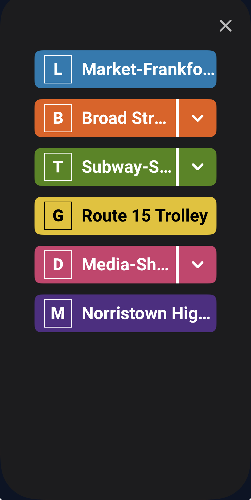

SEPTA App
SEPTA AppReal-time arrival information
The small moment when a rider asks one question: when is my ride coming? Try the Route 21 demo to see how the answer changes as conditions change.
Scheduled time. Live tracking is not available.
1. Triggers
What event starts the microinteraction?
It begins when a rider wants to know when a SEPTA vehicle will arrive. This can happen in several ways:
Select a stop
Choose a bus, trolley, subway/Metro, or Regional Rail stop or station.
Select a route
Pick a route from the map, the schedule, or trip-planning results.
Open a favorite
Open a saved route or stop to check the next departure.
Refresh
Request the latest available information. The app can also update on its own as new transit data arrives.
2. Rules
What rules determine how the microinteraction behaves?
Rule 1: Display the available arrival information
After a rider selects a route or stop, the app shows upcoming departures for that service, using available SEPTA data. This can include:
- Route number and name
- Destination
- Scheduled departure or arrival time
- Estimated arrival when real-time data exists
- Multiple upcoming departures
- Service or delay information
Rule 2: Update the information when conditions change
Arrival information changes as the vehicle nears the stop or as SEPTA data changes.
3:45 PM → 3:48 PM → 3:51 PM
An arrival time is not static. Vehicle location, traffic, delays, and schedule changes can all move it.
3. Feedback
What does the rider see, hear, or feel?
Visual feedback
The primary feedback. On selecting a stop, the rider sees, for example, Route 21, Penn's Landing, 3:45 PM, 3:52 PM, 4:05 PM. They may also see:
- Route information
- Arrival and departure times
- Maps and vehicle locations
- Service alerts
- Refresh and favorite controls
- Status or delay information
What the rider feels
Ideally:
- Confidence about when the ride is coming
- Awareness of delays or changes
- Control over travel plans
- Reassurance that the information is current
Audio feedback
There is generally no major audio component. Screen readers and other accessibility features can speak the information for riders who need them.


4. Loops & modes
What happens when the interaction repeats or conditions change?
Loops
Loop 1: Arrival information keeps changing
The interaction repeats as the vehicle approaches, and the rider can keep checking while they wait.
10 min → 8 → 5 → 3 → 1 → Arriving
Loop 2: Multiple vehicles
When several vehicles serve a route, the app lists multiple arrivals. The rider selects the one they want.
3:45 PM: 4 min
3:57 PM: 16 min
4:10 PM: 29 min
Modes
Mode 1: Scheduled information
Without live data, the rider mainly sees the schedule.
Scheduled: 3:45 PM
Mode 2: Real-time information
With live vehicle data, the app gives an estimate based on current conditions, which is more immediate than the schedule.
4 min away
Mode 3: Delayed service
A late vehicle changes the display. The rider may wait, choose another route, or change their departure time.
8 min late
Estimated: 3:53 PM
Mode 4: Service disruption
For a significant disruption, a service alert accompanies the arrival time and can affect the whole trip.
Route 21 is experiencing delays.
Mode 5: Vehicle arrives
The display changes again at the stop. After the vehicle departs, the interaction resets and the next vehicle becomes the primary arrival.
3 min → 1 min → Arriving
Complete microinteraction flow
The existing interaction from start to repeat.
- User selects stop or route
- SEPTA displays upcoming arrivals
- Real-time information becomes available
- Arrival estimate updates
- User monitors the countdown
- Vehicle approaches
- "Arriving" / arrival status
- Vehicle arrives
- Next scheduled vehicle becomes available
- Interaction repeats